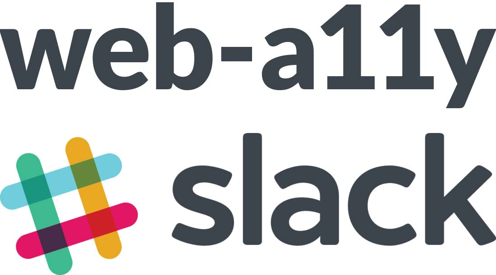
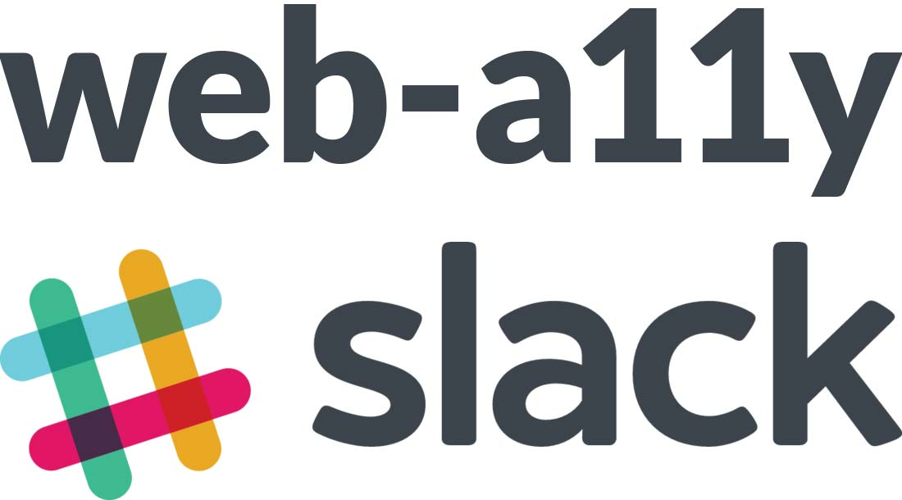
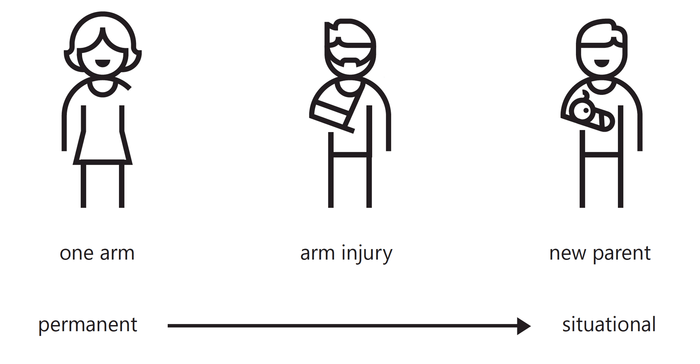
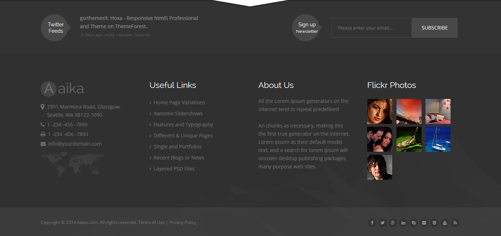
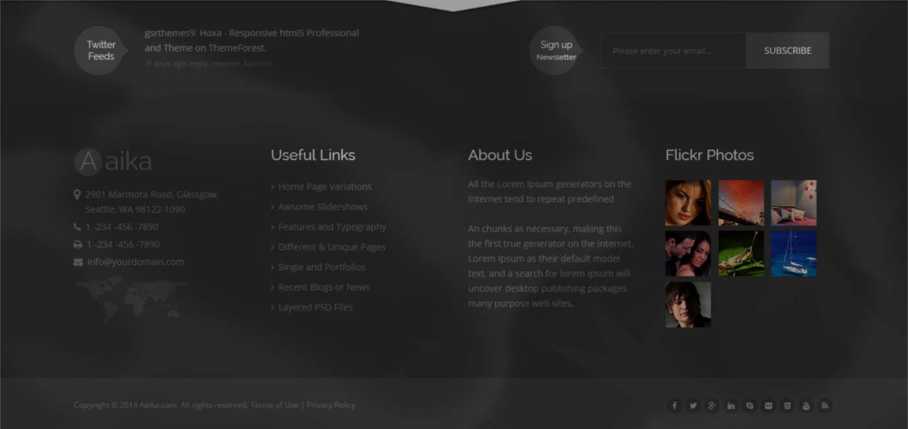
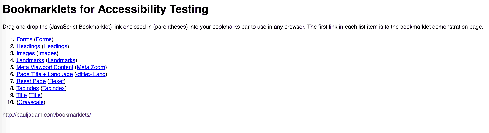

Accessible JavaScript
Created by Marcy Sutton / @marcysutton
Senior Front-End Engineer, Deque Systems
Who is Marcy Sutton?
 

The old days
- Flash and keyboard navigation
- Screen readers and JavaScript
- Page reloads for data interactions
- Car phones in Miatas
The Web has evolved. Yay!
How do we not repeat the same mistakes?
What is accessibility?
W3.org
The Web is fundamentally designed to work for all people, whatever their hardware, software, language, culture, location, or physical or mental ability.
Who are we talking about?
- Blind & Low Vision
- Color-Blind
- Deaf & Hard of Hearing
- Impaired Mobility
- Cognitive/Learning
- AND EVERYONE ELSE
A holistic approach to accessibility
makes the web better for everyone

Web pages are more than
just visible
- Semantic HTML markup
- Headings
- Landmark roles
- Form labels
- Image alt text
- Visually hidden text
Semantics Demos
Web content is more than
just audible
- Video/audio captions
- Transcripts
- Audio descriptions
- User interactions
Low contrast
impacts people more than you think
http://webaim.org/articles/visual/lowvision


But you came to hear about
Accessibility & JavaScript

Let’s talk about:
- Keyboard events
- Icon buttons
- Focus management
- Testing tools
Creating accessible actions
<a ng-href="#/wrong-trousers"></a>
<button ng-click="start()">
<i class="icon"></i>
</button>
<a ng-href="#/wrong-trousers">Techno-Trousers</a>
<button ng-click="start()" aria-label="Start Morning Routine">
<i class="icon"></i>
</button>
Button Demo
“Hidden” vs. “Offscreen” Styles
[hidden] {
display: none;
visibility: hidden;
}
.visuallyhidden {
border: 0;
clip: rect(0 0 0 0);
height: 1px;
margin: -1px;
overflow: hidden;
padding: 0;
position: absolute;
width: 1px;
}
Keyboard navigation
Any element can receive focus with tabindex="0".
<div tabindex="0" class="nav-right"
role="button" aria-label="Next Slide">
</div>
$('.nav-right').on('click keydown', (event) => {
if (event.type === 'click' || event.keyCode === 13) {
navRightClicked();
}
});
But use native
buttons and links first.
They come with native ARIA semantics as well as keyboard support.
Skip Links
Skip Links
Useful for everyone. Make them visible on focus:
li.skip-link {
display: block;
margin: 0;
padding: 0;
position: absolute;
a {
display: block;
position: absolute;
left: -10000px;
top: 0;
width: 200px;
&:focus {
left: 0;
}
}
}
[tabindex="-1"]:focus {
outline: none;
}
<ul>
<li>
<a href="#main">
Skip to Main content
</a>
</li>
</ul>
<main id="main" tabindex="-1">
</main>
Mega Menus
Mega Menus (fixed)
- Really hide inactive content
- Make top level links into toggles
- Close with escape key
Focus Management
Ensure focus is not dropped
Important for:
- Client-side rendering
- Deleting items in a UI
- Interactive widgets
Focus management: a strategy
class App.FocusManager
constructor: ->
$('body').on 'focusin', (e) =>
@oldFocus = $(e.target)
App.bind 'rendered', (e) =>
return unless @oldFocus
@_focusById() if @oldFocus.data('focus-id')
_focusById: ->
focusId = @oldFocus.data('focus-id')
newFocus = document.querySelector("##{focusId}")
MyApp.focus(newFocus) if newFocus
Focus Management
Which item has focus? (debugging utility)
$('body').on('focusin', function() {
console.log(document.activeElement);
});
Testing for Accessibility
We can achieve digital equality by making accessibility part of our web development workflow.
Paul Adam's Bookmarklets
http://pauljadam.com/bookmarklets/
aXe-core
Open Source Accessibility Engine
- Browser extensions
- Unit test integration
- Selenium Webdriver integration
aXe Chrome extension

Unit Test Integration
npm install axe-core
describe('Form component', function () {
document.getElementsByTagName('body')[0].insertAdjacentHTML('beforeend',
'');
it('should have no accessibility errors', function (done) {
var n = document.getElementById('username');
axe.a11yCheck(n, null, function (result) {
expect(result.violations.length).toBe(0);
done();
});
});
Webdriver Integration
npm install axe-webdriverjs
var selenium = require('selenium-webdriver'),
AxeBuilder = require('axe-webdriverjs');
describe('Selenium-aXe Tutorial', function() {
beforeEach(function(done) {
this.driver = new selenium.Builder()
.forBrowser('firefox').build();
this.driver
.get('http://localhost:8000')
.then(function() { done(); });
});
afterEach(function() {
this.driver.quit();
});
it('Should have no accessibility violations', function(done) {
AxeBuilder(this.driver)
.analyze(function(results) {
expect(results.violations.length).toBe(0);
done();
})
});
});
https://github.com/marcysutton/axe-webdriverjs-demo
Learn more on Github

Should your mobile site
be accessible?
It’s About User Experience.
We can make it better.